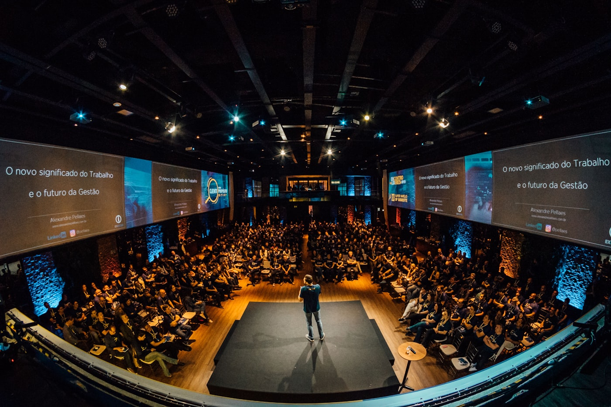
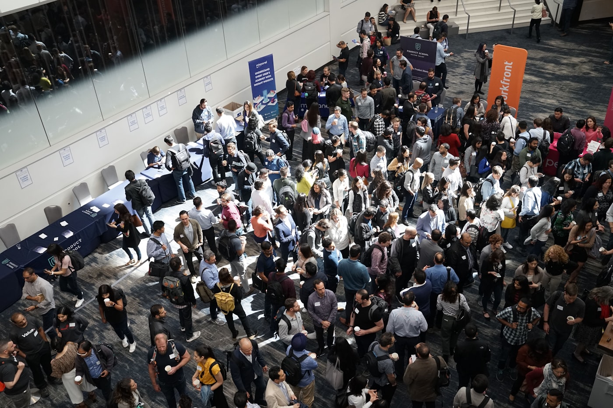
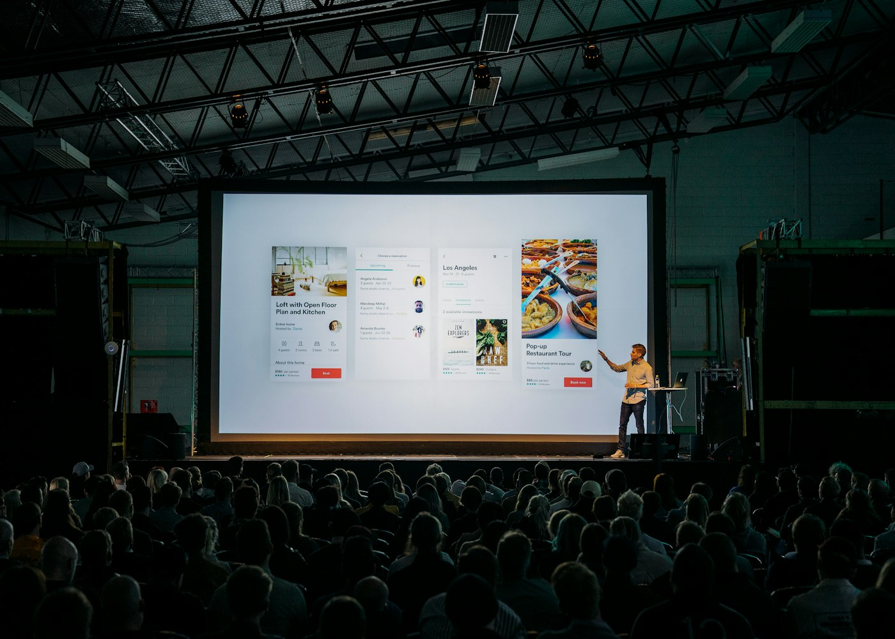
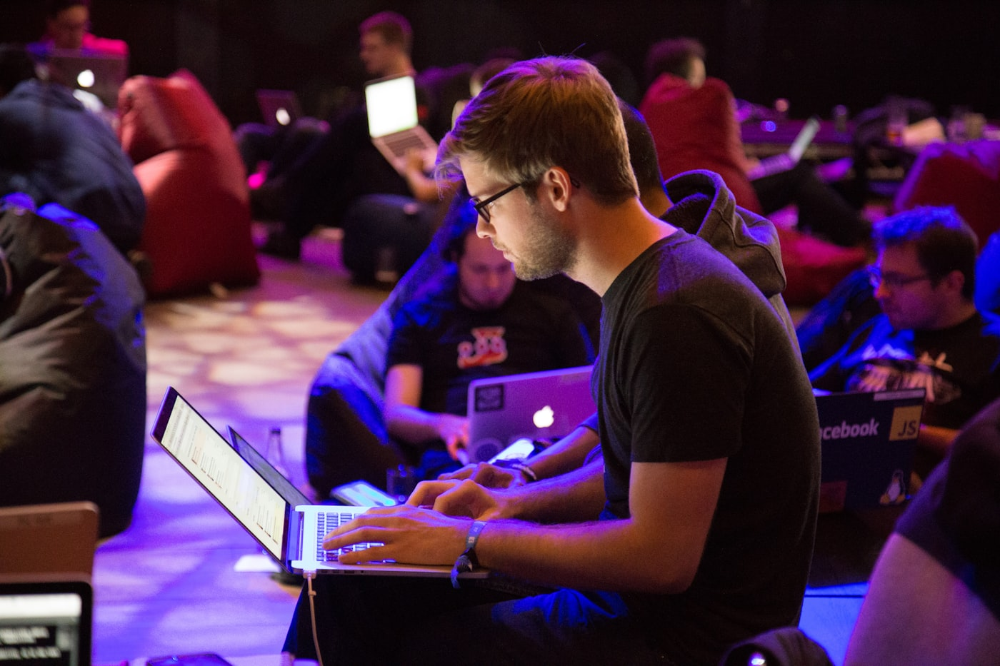

Minha História
Da curiosidade pela tecnologia até os projetos de hoje.

🌱 O Início
Meu interesse por tecnologia começou ainda na adolescência, quando comecei a explorar computadores e programação por conta própria. Sempre fui fascinado por como as linhas de código podem se transformar em soluções incríveis para problemas reais.

📚 Formação Técnica
Ingressei no curso Técnico em Desenvolvimento de Sistemas no Senac, onde tive meu primeiro contato formal com programação. Aprendi os fundamentos de lógica de programação, estrutura de dados e desenvolvimento web. Foi nessa época que descobri minha paixão por criar soluções digitais.

🎓 Graduação em Engenharia de Software
Atualmente cursando Engenharia de Software na Universidade Católica de Brasília, com previsão de conclusão em 2029. Aprofundando conhecimentos em arquitetura de software, metodologias ágeis, banco de dados e desenvolvimento full stack.

💻 Projetos e Experiências
Ao longo da trajetória, desenvolvi projetos acadêmicos e pessoais com HTML, CSS, JavaScript, React e React Native. Participei de eventos de tecnologia, colaborando com outros desenvolvedores e aplicando boas práticas de desenvolvimento.

🎯 Planos para o Futuro
O objetivo é me tornar um desenvolvedor full stack e contribuir para projetos que impactem positivamente a sociedade. Busco oportunidades de estágio para aplicar conhecimentos em React, React Native e tecnologias modernas, aprendendo com profissionais experientes.